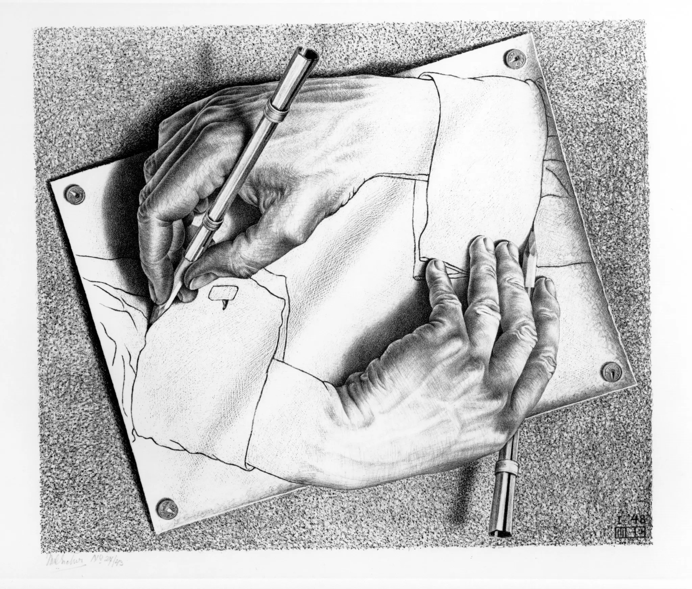

Learning is change, mentally and physically. Learning is creation.
First, one creates new mental constructs, represented as new neuronal firing patterns. Over time, firing patterns change actual wirings of the brain.
Second, one creates various artifacts to realize learned ideas. Artifacts like poem, book, music, painting, sculpture, architecture, computer program, movie, even video game. The medium is the message. The medium is the host of idea cross pollination cascades. Beautiful and scary ideas are born and died is such infosphere.
Could alway try harder, but time and mental energy can’t be leveraged. Maybe stepping back once for a while to think about how to learn more effectively would be constructive.
Structure and Interpretation of Computer Programs
In the first great SICP1 course2, the professor shares how to learn a new computer language. I believe it applies to all learnings. 3 simple principles are key to manage complexity, experiment and build new things:
1 
- Primitive elements
- Means of combination
- Means of abstraction
Primitive elements are fundamental building block, ex: lego.
Means of combination are API between elements. One could fit different building blocks together for something new. ex: fit variety of lego blocks to build a lego house.
Means of abstraction is where magic happened. How to name a complex construct and use it as primitives in later builds? Building with primitive elements are building from first principle. It offers both maximum flexibility and maximum redundancy. To build a lego city, if one could name a lego house and use it as primitive to expand the lego city, it would be way more efficient than building every single house from scratch.
Mastering primitives, APIs and the power of abstraction, complex system could be understood, and created.
The nature of creation is remix
The series do an incredible job to explain the nature of creation from cultural perspective. Artists first would copy lots of previous works to learn the basics and build up muscle memories, primitive elements. Then they could start tweaking old ideas, and fit different ideas together to create new one, means of combination and abstraction.
There would be countless failures during all stages, copy, transform and combine. Typical learning process. One just have to find the grit.
Evergreen notes and spaced repetition
The idea of evergreen notes3 is keeping notes on ideas, let them evolve and connect. The process could easily be supported by software such as Obsidian4.
Think of every idea as primitive. For example, treat the idea about learning to learn as atomic. If one could keep notes about learning to learn whenever it’s triggered and connect it to other ideas, the knowledge graph would become organic. It will function like a mental fusion reactor, reinforcing one idea while making connections to others, even trigger conflicts among ideas. This is super valuable process to sustain. Especially treasure and cultivate the internal conflicts.
The test of a first-rate intelligence is the ability to hold two opposed ideas in mind at the same time and still retain the ability to function.
F. Scott Fitzgerald
Spaced repetition5 resonates well with understanding primitives and the copy phase. Find the rhythm to reinforce fundamentals and grow the network density.
Bootstrapping with \(\Delta\)
What to copy? To transform? To combine with? I know nothing right now. How to improve the quality of idea?
The quality is conditioned on:
- How good is the world model?
- How goodness of world model attenuate during n step roll out? What’s the largest, usable n?
- How fast, how many orthogonal possibilities could be found based on n-step rolled out simulations?
- Precision and recall?
- Precision: the ratio of good idea.
- Recall: out of all good possible ideas, how many are found?
Generate 100 bad ideas to get a good one is ok at the beginning, but sticking to naive working hard is never ideal. To improve, one needs to improve the world model, the quality of simulation and the efficiency of exploration.
Great mentors and brilliant peers are a bliss. However, solo walker could still make meaningful strides. The key is to expand on time axis and create delta to answer known unknown and explore unknown unknown.
For example, starting every new project by writing down the context and expectation:
- Trigger of the project? Why?
- Expected result?
- Expected learning?
- Expected obstacles?
The goal is not to predict the future, but create a T0 snapshot.
During the project, record every single new ideas about how to improve the project, possible extension follow up, even tangential quantum leap. Don’t care about the quality of ideas. The goal is to create T1 … Tn snapshots.
Finish the project and critique the old you.
Critique of the context is the largest delta. One may enter the project for all the wrong reasons and with many biased or varied expectations. Hopefully one could recognize some and figure out why looking backward.
Listing all, non-discriminative ideas first to critique after creates a flow of delta along the progress. Hopefully one could see how old perspective changes and new form.
That delta is THE force. Actively search, mine, recognize, accept and adopt to it.
Learning is a process of resolving merge conflicts between internal world model and perceived reality. Faster learning means one is willing to and could resolve more conflicts in a shorter time. Stopped learning means one is unwilling to or unable to see the delta and resolve the conflict.
Bootstrapping is soliloquy by nature. Endless self-play. It could be a long gradually with no light of suddenly, but one can choose to believe.
For most adults, multiagent learning is more humane. However, if one could effectively copy, transform and simulate different perspectives through various media such as papers or books, some of real human apprenticeship or peers could be replaced by self-multiagent learning, ideally saving communication overhead and redundant information. This is similar to self-ensemble on LLM conditioned by different prompts.
It’s possible to be your own mentor, simulate the diversified peers and grow sustainably. Just have to reset and self-question all the time to keep many characters alive in one brain. Not the most effective route though. One will learn way more faster by simply observing brilliant people. Deep collaboration has even greater yields. Closed mode can’t match such electrifying environment, but slow learning is real, honest and grounded.
Why
These ideas are in the same league of every other how to knowledge, means to ends. Humans build tools to achieve goals. However, developing the understanding of how is as important as the understanding of why.
He who has a why to live can bear almost any how.
– Friedrich Nietzsche
Happy learning and remember to ask periodically: to what ends?